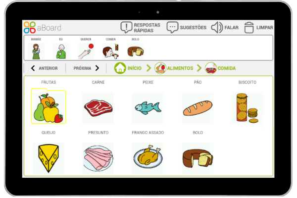
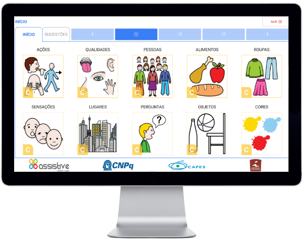

aBoard
Inovando a maneira de comunicar!


O aBoard (ou em português “Prancha Assistive”) é um aplicativo de Comunicação Aumentativa e Alternativa (CAA) para tablet cujo diferencial é a sua capacidade de dar sugestões que agilizem a produção de frases com sentido. Fruto do projeto de pesquisa ASSISTIVE, o aBoard é voltado para os indivíduos que têm deficiência na comunicação gestual, oral e/ou escrita, sendo possível também utilizá-lo como ferramenta de apoio na educação inclusiva e em terapias, como a PECS.
O aBoard Editor é o sistema Web que permite personalizar o vocabulário do aplicativo aBoard. Dentre as funcionalidades desta ferramenta, destaca-se a sua capacidade de indicar sugestões que agilizem a produção de frases com sentido. Fruto do projeto de pesquisa ASSISTIVE, o aBoard Editor é 100% gratuito e foi financiado com recursos do governo federal (CNPq e CAPES). Vale ressaltar que, ao contrário do aBoard, o aBoard Editor requer conexão de internet para ser utilizado e é voltado para os familiares e/ou cuidadores (profissionais de saúde e de educação) do indivíduo com deficiência na comunicação.

O Assistive é um Grupo de Pesquisa que visa desenvolver tecnologias inovadoras em Comunicação Aumentativa e Alternativa (CAA). O Grupo foi fundado em Janeiro de 2014 no Centro de Informática (CIn) da Universidade Federal de Pernambuco (UFPE), faz parte do Centro Nacional de Referência em Tecnologia Assistiva (CNRTA) e recebe financiamento do Conselho Nacional de Desenvolvimento Científico e Tecnológico (CNPq) e da Coordenação de Aperfeiçoamento de Pessoal de Nível Superior (CAPES).